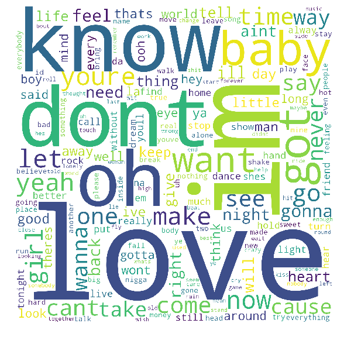

This Word Cloud contains the top words used among all artists. The number one word was "love", and to be honest, I can't say that I'm surprised. Love is universal, and a very popular topic to write/sing about, and this helps to prove that. After love, the word "Im" takes second, which if I had to guess, the word that would have been next to this word is "in", but that's a stop word so it doesn't count it. After that are words like "don't", "baby", "know", "oh", "want" and "you're". I'm pretty sure that if we tried, we could write a hit song about love from the words that are in this WordCloud and it could very well be a hit.